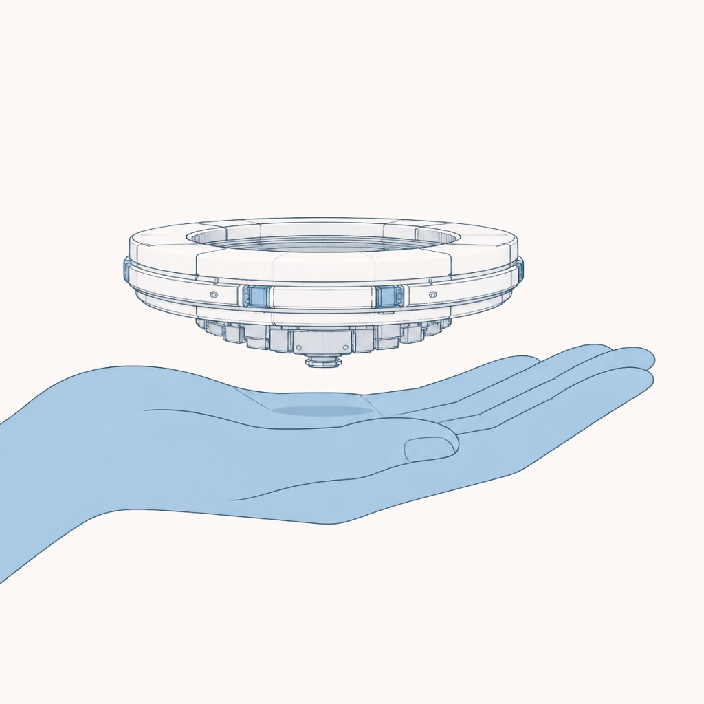
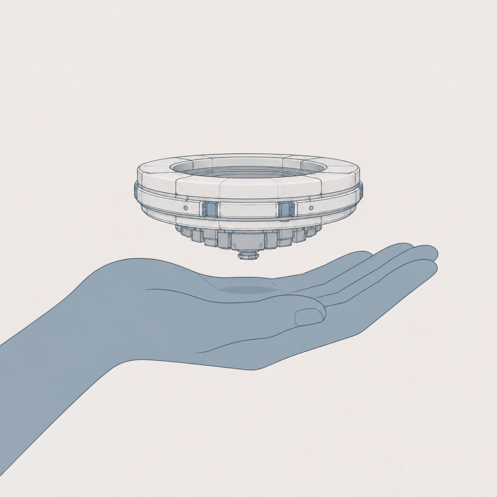
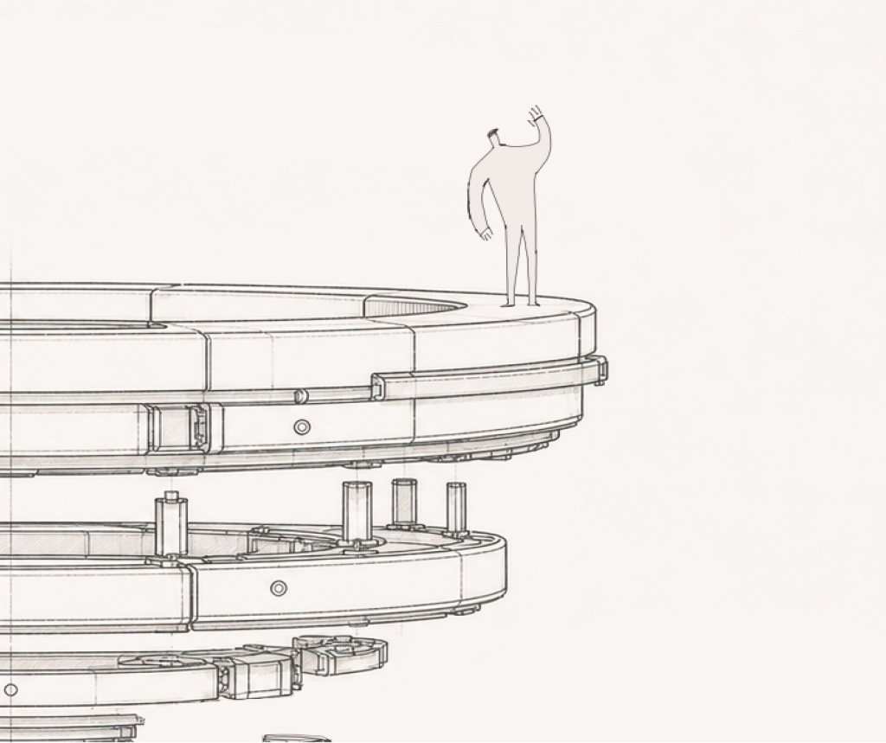

Build AIthat truly Learns
The ability to learn is the only means to generalize artificial intelligence to all sectors of human intellectual work.
We are building the first generation of foundation models that can continuously learn, adapt, and improve.




We believe the future of AI should be diverse and inclusive. Every business should be able to use its proprietary knowledge to build its own AI. Every person should have an AI experience tailored to them. And by default, their data should stay in their hands.
What makes us different
Modelsthat adapt,not just respond
Learning at inference
Our models take in new knowledge as they work, pick up new tasks through trial and error.
No operation overhead
No data-collection pipeline, no dedicated training infrastructure, no team of ML engineers to maintain. Connect the model to a workflow and it learns on the job.
Careers
Join us
We're building the future of AI, and we're hiring across research, engineering, and product. Come build it with us.